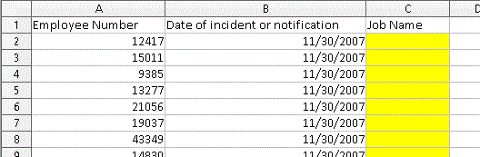
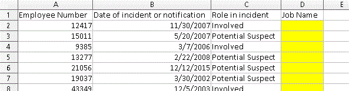
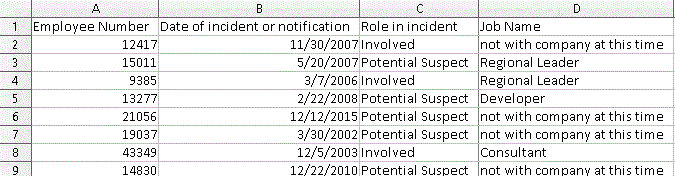

Multi-Condition Data Retrieval
4/7/2019How to use R and SQL to Circumvent Technology Limitations on Large Queries with 2 or more Conditions
Sometimes our standard business intelligence tools can fail when clients ask for data the tools are not built to retrieve. One example I run into fairly often in Human Resources analytics is when a client wants to know what employees were doing on specific dates.
Now you may work with tools that can handle this type of seemingly simple business question. Unfortunately, not all of us have that luxury.
Our systems are built for single-condition queries. Typically, clients come to us with a spreadsheet like the one below, where one condition changes - different employee numbers - but the other columns do not change.

However, on occasion clients ask for information about different employees on different dates, like in this spreadsheet where the dates are different on each row:
I have more information about these BI tool limitations and why I have chosen this solution here.
In this post we will circumvent the limitations of our standard BI tools to make multi-condition data retrieval easier. We will:
I want to be clear that the following methodology is not for everyone. This process meets the need in my environment and I thought I would share in the hope that some of you will benefit from this information.
The raw R script is here.
Client Data
We'll start with Excel to see the file the client has provided. Here is a link to the file and here is a screengrab:

The client has privided us with a list of employee numbers and dates and asked us to populate the `Job Name` field. So the client wants to know what job title - if any - the employee had on some sort of incident or notification date. Column C, Role in incident, is irrelevant to our data pull but the client wants us to include it in the final file we provide.
Let's move to R and and import our data using readxl. We'll load the other libraries we'll need as well. Since the sample client Excel file is stored on GitHub, we can use the httr package to download and write it to disk in a temp file. Then we can import with readxl's read_excel function.
library(RMariaDB)
library(tidyverse)
library(openxlsx)
library(readxl)
library(httr)
temp_file <- tempfile(fileext = ".xlsx")
req <- GET("https://raw.githubusercontent.com/harryahlas/sample-hr-database/master/data/JohnsonLitigationResearch.xlsx",
# write result to disk
write_disk(path = temp_file))
input_data <- read_excel(temp_file)
We can remove the `Job Name` field since we will be replacing it. Additionally, let's update the date field to a date format. This will help with joins later.
input_data <- input_data %>% select(-`Job Name`) %>% mutate(`Date of incident or notification` = as.Date(`Date of incident or notification`))
The HR Sample Database and Connecting to R
The job title data the client is interested in is available in the HRSAMPLE MySQL database I have created. You can install MySQL and the HRSAMPLE database on your machine using the instructions here. It takes about an hour.
Use the RMariaDB package to connect to HRSAMPLE and take a look at the tables available.
HRSAMPLE <- dbConnect(MariaDB(),
user='newuser',
password='newuser',
dbname='hrsample',
host='localhost')
dbListTables(HRSAMPLE)
[1] "deskhistory" "deskjob"
[3] "employeeinfo" "hierarchy"
[5] "performancereview" "salaryhistory"
The deskhistory and desk_id tables have what we need. The deskhistory table has a history of employee positions (desk_ids) in the company, showing who sat where at what time. The deskjob table shows what job belongs to each desk_id. We can join the two tables to determine what job an employee had on any date.
Create a test SQL query
Our final SQL query will have some complexities. Prior to creating our final query with placeholder variables, it is a good idea to create a short test script with hard-coded conditions. Test scripts are easier to debug and help ensure your query is solid. Below is a sample SQL script that retrieves employee number 43349's job on December 5, 2003.
SELECT
'2003-12-05' AS "Date of incident or notification",
DH.employee_num,
DH.desk_id,
DJ.job_name
FROM
`hrsample`.`deskhistory` DH,
`hrsample`.`deskjob` DJ
WHERE
DJ.desk_id = DH.desk_id
AND DH.employee_num = 43349
AND DH.desk_id_start_date <= DATE('2003-12-05')
AND DH.desk_id_end_date <= DATE('2003-12-05') ;
The above script is available online as mcdr_test.sql. You can run it using the code below in R. You can see employee 43349 was a Consultant on 12/5/2003.
test_sql <- read_file("https://raw.githubusercontent.com/harryahlas/sample-hr-database/master/scripts/mcdr_test.sql")
test_df <- dbGetQuery(HRSAMPLE, test_sql)
test_df
Date of incident or notification employee_num desk_id job_name
1 2003-12-05 43349 228 Consultant
Add Placeholders to the SQL
Now that we have a functional script that can pull one employee/date pair, we can scale the script by adding placeholders. The placeholders can be replaced with the multiple conditions that the client has provided.
In this request, we have two conditions that can change: employee_num and Date of incident or notification. In our new SQL script, let's make these changes:
- Replace
employee_numwith%EMP_ID% - Replace
Date of incident or notificationwith%DATE_ID%
The new code looks like this:
SELECT
DATE('%DATE_ID%') AS "Date of incident or notification",
DH.employee_num,
DH.desk_id,
DJ.job_name
FROM
`hrsample`.`deskhistory` DH,
`hrsample`.`deskjob` DJ
WHERE
DJ.desk_id = DH.desk_id
AND DH.employee_num = %EMP_ID%
AND DH.desk_id_start_date <= DATE('%DATE_ID%')
AND DH.desk_id_end_date >= DATE('%DATE_ID%') ;
So we now have a script, mcdr.sql, that we can iterate through each employee/date pair the client has provided. We can replace %EMP_ID% and %DATE_ID% with the data in each row of the client's worksheet. (Note the % signs in the placeholders are cosmetic and not required.)
Before we iterate through the entire client spreadsheet, let's do a final test on one row of the client data to make sure the script with the placeholders works. Let's start by importing mcdr.sql.
mvdr_sql_placeholder <- read_file("https://raw.githubusercontent.com/harryahlas/sample-hr-database/master/scripts/mcdr.sql")
Next, we'll use base R's gsub function to fill the placeholders with the client's data. For this example, we only want to pull data for a single employee/date pair, so we'll subset row [2] of the data for the replacement arguments.
mvdr_sql <- mvdr_sql_placeholder %>%
gsub(pattern = '%EMP_ID%',
replacement = input_data$`Employee Number`[2],
x = .) %>%
gsub(pattern = '%DATE_ID%',
replacement = input_data$`Date of incident or notification`[2],
x = .)
Now that the placeholders have been filled, we can retrieve the data.
df_one_row <- dbGetQuery(HRSAMPLE, mvdr_sql) df_one_row Date of incident or notification employee_num desk_id job_name 1 2007-05-20 15011 88 Regional Leader
Great! The code is working and we are ready run through all the client data.
Ready to Go - Let's Iterate
We will use a for loop to retrieve the data. So one loop and retrieval for each row of client data. As I mention in my side post, this is not the fastest way to pull data (and certainly not the only way) but it is a good hack to get around the system limitations that we can face.
To start, we will create an empty data frame called df. As we cycle through the client data, we'll append our results to df.
df <- tibble()
Next, we'll start our for loop. Again, this will be one iteration per row. So i will be the same as the row number of the input data.
for (i in 1:nrow(input_data)) {
Once we are in the for loop, we will repeat the same code we used in the previous test run, with three changes:
- Add
[i]to subsetinput_data$`Employee Number` - Add
[i]to subsetinput_data$`Date of incident or notification` - Save the retrieved data to a temporary data frame called
df_temp
# Replace placeholders with employee_num and date
mvdr_sql <- mvdr_sql_placeholder %>%
gsub(pattern = '%EMP_ID%',
replacement = input_data$`Employee Number`[i],
x = .) %>%
gsub(pattern = '%DATE_ID%',
replacement = input_data$`Date of incident or notification`[i],
x = .)
# Retrieve data to temporary table
df_temp <- dbGetQuery(HRSAMPLE, mvdr_sql)
The last piece of the loop will append the temporary data df_temp to the prior retrievals in df.
df <- bind_rows(df, df_temp) }
Running the code above will create a data frame with the information the client needs.
Export to Excel
To make things easy on the client, we'll make our process look as seamless as possible. We'll export an Excel file that looks nearly identical to what the client provided. We'll start with our input_data data frame and join it to the new data from our for loop.
I try to add some realism to these examples when I can and a couple of those pieces are on display here. The client has asked for data that may not exist. They may be asking for employee information on a date that the employee was not with the company. Maybe the team member had terminated prior to that date. In those cases, our query retrieves NAs. We'll use the replace_na function to add context for those NAs: not with company at this time. We will even format the job name and employee number columns to match what was on the client's spreadsheet.
output <- input_data %>%
left_join(df %>% select(-desk_id),
by = c("Date of incident or notification",
"Employee Number" = "employee_num")) %>%
replace_na(list(job_name = "not with company at this time")) %>%
rename(`Job Name` = job_name)
Last, we'll use openxlsx to export to Excel. For this example we will export a single tab. Normally, I would include a second disclaimer tab, which I strongly recommend and discuss in another blog post called Use R to add a Data Disclaimer to an Excel Report.
wb <- createWorkbook() addWorksheet(wb, "HR data needed with output") writeDataTable(wb, 1, output) saveWorkbook(wb, "output/Johnson litigation research with job_name.xlsx", TRUE)
Here is the exported file:

Final Thoughts
I didn't share it here but I want to add I'll usually include code to automatically log in/log out of the database periodically. This will prevent the connection from timing out. It is a must for the larger retrievals which can take several hours.
Hopefully your work environment is more flexible than mine and you are able to create temporary tables without having to worry about timeouts and avoid having to loop through retrievals as described here. But if you do face the same challenges I do then I hope this information has been helpful. I would enjoy hearing any feedback you have.